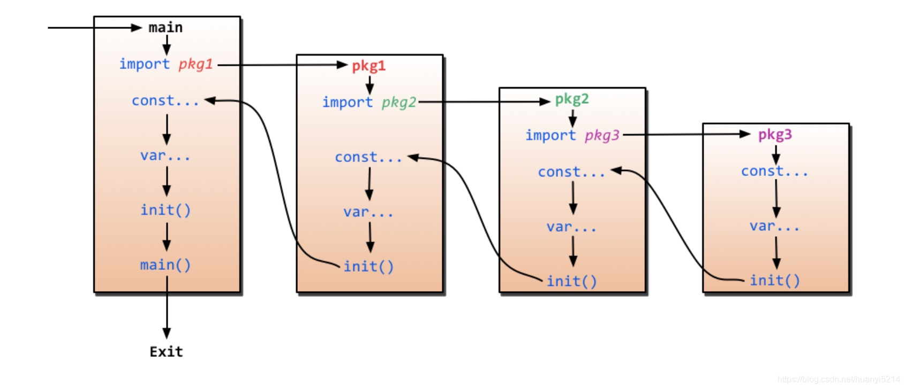

Go是Google公司2009年11月正式对外公开的一门编程语言。
Go语言的推出，旨在不损失应用程序性能的情况下降低代码的复杂性，具有“部署简单、并发性好、语言设计良好、执行性能好”等优势，目前国内诸多 IT 公司均已采用Go语言开发项目。
Go语言经过多年的发展，现在安装比较简单，可直接从官网下载安装。
官网下载地址： https://go.dev/dl/
国内下载地址： https://golang.google.cn/dl/
根据自已的操作系统，下载对应的版本安装即可。
例如：
Windows，下载 Microsoft Windows https://golang.google.cn/dl/go1.21.4.windows-amd64.msi
Apple macOS(x86-64)，下载对应的 https://golang.google.cn/dl/go1.21.4.darwin-amd64.pkg
vim ~/.bash_profile
复制代码export GOPATH=/Users/xjz/go # go第三方包目录 export GOROOT=/usr/local/go # go安装目录 export GO111MODULE=on # go modules 是 golang 1.11 新加的特性, 为配合七牛国内镜像建议开启 export GOPROXY=https://goproxy.cn,direct # 开启第三方包国内镜像地址 export PATH=$PATH:$GOPATH/bin # 第三方全局命令，可不设置
source ~/.bash_profile
| 命令 | 描述 |
|---|---|
| go bug | 启动一个用于报告bug的工具。 |
| go build | 编译Go程序包及其依赖项。 |
| go clean | 删除编译生成的对象文件和缓存文件。 |
| go doc | 显示有关包或符号的文档。 |
| go env | 打印有关Go环境的信息。 |
| go fix | 更新包以使用新的API。 |
| go fmt | 使用gofmt重新格式化Go包的源代码。 |
| go generate | 通过处理源代码来生成Go文件。 |
| go get | 将依赖项添加到当前模块并安装它们。 |
| go install | 编译并安装包及其依赖项。 |
| go list | 列出包或模块的信息。 |
| go mod | 用于模块维护,包括初始化模块、添加和更新依赖项等。 |
| go work | 用于工作区维护,例如查看、清理或打印工作区信息。 |
| go run | 编译并运行Go程序。 |
| go test | 运行包的测试。 |
| go tool | 运行指定的Go工具。 |
| go version | 打印Go的版本信息。 |
| go vet | 检查 Go 源码并报告可疑的错误。 |
go mod是Go语言的模块管理工具，go mod必须将golang升级到1.11以上版本，配置开启go mod，go语言1.16版本之后，默认开启go mod功能。
复制代码go env -w GOBIN=/usr/local/go/bin #配置下go bin go env -w GO111MODULE=on #开启go mod go env -w GOPROXY=https://goproxy.cn,direct #七牛云代理
| 参数 | 说明 |
|---|---|
| download | download modules to local cache（下载依赖包） |
| edit | edit go.mod from tools or scripts (编辑go.mod) |
| graph | print module requirement graph（打印模块依赖图) |
| init | initialize new module in current directory (在当前目录初始化mod) |
| tidy | add missing and remove unused modules（拉取缺少的模块，移除不用的模块） |
| vendor | make vendored copy of dependencies（将依赖复制到vendor下） |
| verify | verify dependencies have expected content（验证依赖是否正确） |
| why | explain why packages or modules are needed（解释为什么需要依赖） |
比较常用的是init,tidy,edit
专门用来运行命令源码文件的命令，不是用来运行所有go源码的文件的。
go run 命令只能接受一个命令源码文件以及若干个库源码文件(必须同属于main包)作为文件参数，且不能接受测试源码文件。它在执行时会检查源码文件的类型。如果参数中有多个或者没有命令源码文件，那么go run命令就只会打印错误提示信息并退出，而不会继续执行。
用于编译并运行 Go 源代码文件。它是一个方便的工具，可用于在不需要显式构建可执行文件的情况下直接运行 Go 程序。常用的参数包括:
| 参数 | 说明 |
|---|---|
| -n | 打印执行的命令,但不执行。 |
| -x | 打印执行的命令及参数。 |
| -race | 启用数据竞争检测。 |
| -gcflags | 传递参数给编译器,如优化级别等。 |
| -buildmode | 指定编译模式,如共享库或插件等。 |
| -ldflags | 传递参数给链接器。 |
| -trimpath | 去除输出中的文件路径信息。 |
| -memprofile | 写入内存概要文件。 |
| -cpuprofile | 写入CPU概要文件。 |
| -blockprofile | 写入阻塞概要文件。 |
| -timeout | 执行超时时间。 |
| -args | 传递参数给程序,放在最后。 |
Go 是强类型编译型语言，因此编译时会将所有依赖编译进同一个二进制文件。
| 参数 | 说明 |
|---|---|
| -o | 指定输出的文件名，可以带上路径，例如 go build -o a/b/c |
| -i | 安装相应的包，编译+go install |
| -a | 更新全部已经是最新的包的，但是对标准包不适用 |
| -n | 把需要执行的编译命令打印出来，但是不执行，这样就可以很容易的知道底层是如何运行的 |
| -p n | 指定可以并行可运行的编译数目，默认是CPU数目 |
| -race | 开启编译的时候自动检测数据竞争的情况，目前只支持64位的机器 |
| -v | 打印出来正在编译的包名 |
| -work | 打印出来编译时候的临时文件夹名称，并且如果已经存在的话就不要删除 |
| -x | 打印出来执行的命令，其实就是和-n的结果类似，只是这个会执行 |
| -ccflags ‘arg list’ | 传递参数给5c, 6c, 8c 调用 |
| -compiler name | 指定相应的编译器，gccgo还是gc |
| -gccgoflags ‘arg list’ | 传递参数给gccgo编译连接调用 |
| -gcflags ‘arg list’ | 传递参数给5g, 6g, 8g 调用 |
| -installsuffix suffix | 为了和默认的安装包区别开来，采用这个前缀来重新安装那些依赖的包，-race的时候默认已经是-installsuffix race,大家可以通过-n命令来验证 |
| -ldflags ‘flag list’ | 传递参数给5l, 6l, 8l 调用 |
| -tags ‘tag list’ | 设置在编译的时候可以适配的那些tag，详细的tag限制参考里面的 Build Constraints |
go test 命令用于运行Go程序包中的测试。Go的测试是通过在与被测试的代码文件相同目录下的 _test.go 文件中编写测试函数来完成的。这里介绍几个常用的参数：
| 参数 | 说明 |
|---|---|
| -bench regexp | 执行相应的benchmarks，例如 -bench=. |
| -cover | 开启测试覆盖率 |
| -run regexp | 只运行regexp匹配的函数，例如 -run=Array 那么就执行包含有Array开头的函数 |
| -v | 显示测试的详细命令 |
go vet 是 Go 编程语言的一个静态分析工具，用于检查 Go 代码中可能包含的潜在错误、不规范的代码和常见问题。它的主要目标是帮助开发人员识别和修复可能导致程序运行时错误的问题，以提高代码的质量和可靠性。
| 参数 | 说明 |
|---|---|
| -all | 执行所有可用的 go vet 检查。默认情况下，go vet 只运行一些常见的检查，但使用 -all 标志可以启用所有检查。 |
| -shadow | 检查代码中的变量阴影问题。这个标志用于检测局部变量覆盖外部变量的情况。 |
| -printfuncs list | 自定义 Printf 样式函数的检查。您可以指定一个逗号分隔的函数列表，go vet 将检查是否正确使用了这些函数来格式化字符串。 |
| -composites | 检查使用复合文字（composite literals）时的问题。这个标志用于检测复合文字的使用是否符合规范。 |
| -copylocks | 检查复制锁的问题。这个标志用于检测代码中是否存在复制锁，以及它们是否正确使用。 |
| -lostcancel | 检查丢失的上下文取消问题。这个标志用于检测代码中是否存在未正确处理的上下文取消。 |
| -methods | 检查接口方法问题。这个标志用于检测接口是否被正确实现。 |
| -printf | 检查格式化字符串问题。这个标志用于检测 Printf 样式的格式化字符串是否正确匹配参数。 |
| -unreachable | 检查不可达代码问题。这个标志用于检测不会被执行的代码块。 |
| -shadowstrict | 启用更严格的变量阴影检查。这个标志用于检测更多的变量阴影情况。 |
用于清理构建过程中生成的临时文件和构建缓存。它有助于确保项目处于干净的状态，删除构建过程中生成的中间文件，以便重新构建项目时不会受到旧文件的影响。
| 参数 | 说明 |
|---|---|
| -i | 清除关联的安装的包和可运行文件，也就是通过go install安装的文件 |
| -n | 把需要执行的清除命令打印出来，但是不执行，这样就可以很容易的知道底层是如何运行的 |
| -r | 循环的清除在import中引入的包 |
| -x | 打印出来执行的详细命令，显示 go clean 执行的每个步骤。 |
| -testcache | 使用 -testcache 标志来清除测试缓存。这将删除与测试相关的缓存文件。 |
| -modcache | 使用 -modcache 标志来清除模块缓存。这将删除模块依赖项的缓存文件。 |
用于格式化源代码文件，以确保它们符合 Go 语言的编码规范和格式化约定。go fmt 命令的主要目的是使代码在不同项目和团队中保持一致的风格，提高代码的可读性和可维护性。
| 参数 | 说明 |
|---|---|
| -l | 显示那些需要格式化的文件 |
| -w | 把改写后的内容直接写入到文件中，而不是作为结果打印到标准输出。 |
| -r | 添加形如“a[b:len(a)] -> a[b:]”的重写规则，方便做批量替换 |
| -s | 简化文件中的代码 |
| -d | 显示格式化前后的diff而不是写入文件，默认是false |
| -e | 打印所有的语法错误到标准输出。如果不使用此标记，则只会打印不同行的前10个错误。 |
| -cpuprofile | 支持调试模式，写入相应的cpufile到指定的文件 |
用于下载、安装和更新Go语言包(模块)以及它们的依耐项。这个命令通常用于获取外部包。
| 参数 | 说明 |
|---|---|
| -d | 只下载不安装 |
| -f | 只有在包含了-u参数的时候才有效，不让-u去验证import中的每一个都已经获取了，这对于本地fork的包特别有用 |
| -fix | 在获取源码之后先运行fix，然后再去做其他的事情 |
| -t | 同时也下载需要为运行测试所需要的包 |
| -u | 强制使用网络去更新包和它的依赖包 |
| -v | 显示执行的命令 |
用于编译和安装Go包或程序。当运行go install时，它会编译当前目录中的Go代码，并将生成的二进制可执行文件放置在你的Go工作空间bin目录中(通常位于GOPATH中)。
| 参数 | 说明 |
|---|---|
| -i | 安装到GOBIN环境变量指定的目录,默认为GOPATH/bin。 |
| -n | 打印将要执行的命令,但不执行。 |
| -v | 显示执行的命令。 |
| -x | 打印执行的命令及其参数。 |
| -work | 打印临时工作目录的名称,然后退出。 |
| -pcgo | 针对cgo enabled的包,调用gcc来编译。 |
| -pkgdir | 安装完成后的包文件存放目录。 |
| -tags | 构建标签,用于选择性地编译相应的代码。 |
| -trimpath | 移除文件名中的GOPATH路径前缀。 |
| -mod | 模块下载和解析模式,可设为mod、vendor等。 |
Go程序由多个标记组成，可以是关键字，标识符，常量，字符串，符号。Go语言特点，简单，很多关键字都是简写，分号结束一般都不需要写。
var 声明变量
const 声时常量
type 声明类型
func 声明函数
例如一个简单语句
复制代码fmt.Println("Hello, World!")
包声明
引入包
函数
变量
语句 & 表达式
注释
helloword.go
复制代码package main // 包声明
import "fmt" // 引入包
func main() { // 主函数
/* 这是我的第一个简单的程序 */
fmt.Println("Hello, World!") //执行的语句
}
数据类型是为了把数据分成所需内存大小不同的数据，编程的时候需要用大数据的时候才需要申请大内存，就可以充分利用内存。
Go语言按类别有以下几种类型
布尔型 布尔型的值只可以是常量true,或者false。一个简单的例子 var b bool = true
数字类型 整型int和浮点float32、float64、Go语言支持整型和浮点型数字，并且支持复数，其中位的运算采用补码。
字符串类型 字符串就是一串固定长度的字符连接起来的字符序列。Go的字符串是由单个字节连接起来的。Go的字符串的字节使用UTF-8编码标识Unicode文本。
派生类型：
指针类型 pointer
数组类型
结构化类型 struct
Channel类型
函数类型
切片类型
接口类型 interface
Map类型
变量来源于数学，是计算机语言中存储计算结果或能表示值抽象概念。
变量可以通过变量名访问。
Go语言变量名由字母、数字、下划线组成，其中首字符不能为数字。
声明变量的一般形式是使用var关键字
复制代码var idn int
可以一次声明多个变量
复制代码//类型相同多个变量, 非全局变量
var vname1, vname2, vname3 type
vname1, vname2, vname3 = v1, v2, v3
var vname1, vname2, vname3 = v1, v2, v3 // 和 python 很像,不需要显示声明类型，自动推断
vname1, vname2, vname3 := v1, v2, v3 // 出现在 := 左侧的变量不应该是已经被声明过的，否则会导致编译错误// 全局声明多 // 这种因式分解关键字的写法一般用于声明全局变量
var (
vname1 v_type1
vname2 v_type2
)
实例
复制代码package main
import "fmt"
var x, y int
var ( // 这种因式分解关键字的写法一般用于声明全局变量
a int
b bool
)
var c, d int = 1, 2
var e, f = 123, "hello"
//这种不带声明格式的只能在函数体中出现
//g, h := 123, "hello"
func main(){
g, h := 123, "hello"
fmt.Println(x, y, a, b, c, d, e, f, g, h)
}
值类型和引用类型
所有像int、float、bool和string这些基本类型都属于值类型，使用这些类型的变量直接指向存在内存中的值。
当使用等号=将一个变量的值赋值给另一个变量时，如 j=i，实际上是在内存中将i的值进行了拷贝。
你可以通过&i来获取变量i的内存地址，例如0xf840000040（每次的地址都可能不一样）。
值类型变量的值存储在堆中。
内存地址会根据机器的不同而有所不同，甚至机同的程序在不同的机器上执行后也会有不同的内存地址。因为每台机器可能有不同的存储器布局，并且位置分配也可能不同。
更复杂的数据通常会需要使用多个字，这些数据一般使用引用类型保存。
这个内存的地址称为指之为指针，这个指针实际上也被存在另外的某一个值中。
同一个引用类型的指针指向多个字可以是在连续的内存中(内存布局是连续的)，这也是计算效率最高的一种存储形式；也可以将这些字分散存放在内存中，每个字都指示了下一个字所在的内存地址。
变量作用域：
作用域为已声明标识符所表示的常量、类型、变量、函数或包在源代码中的作用范围。
Go语言中变量可以在三个地方声时：
函数内定义的变量称为局部变量
函数外定义的变量称为全局变量
函数定义中变量称为形式参数
局部变量的例子
复制代码package main
import "fmt"
func main() {
/* 声明局部变量 */
var a, b, c int
/* 初始化参数 */
a = 10
b = 20
c = a + b
fmt.Printf ("结果： a = %d, b = %d and c = %d\n", a, b, c)
}
全局变量实例
复制代码package main
import "fmt"
/* 声明全局变量 */
var g int
func main() {
/* 声明局部变量 */
var a, b int
/* 初始化参数 */
a = 10
b = 20
g = a + b
fmt.Printf("结果： a = %d, b = %d and g = %d\n", a, b, g)
}
形参实例
复制代码package main
import "fmt"
/* 声明全局变量 */
var a int = 20
func main() {
/* main 函数中声明局部变量 */
var a int = 10
var b int = 20
var c int = 0
fmt.Printf("main()函数中 a = %d\n", a)
c = sum( a, b)
fmt.Printf("main()函数中 c = %d\n", c)
}
/* 函数定义-两数相加 */
func sum(a, b int) int {
fmt.Printf("sum() 函数中 a = %d\n", a)
fmt.Printf("sum() 函数中 b = %d\n", b)
return a + b
}
变量默认值
| 数据类型 | 初始化默认值 |
|---|---|
| int | 0 |
| float32 | 0 |
| pointer | nil |
数组声明需要指定元素类型及元素个数，语法格式如下：
复制代码var arrayName [size]dataType
其中 arrayName是数组的名称, size为数组的大小，dataType是数组中元素的数据类型。
实例
复制代码var numbers [5]int // 默认初始化 ，初始值为0
var numbers = [5]int{1, 2, 3, 4, 5} // 可以使用初始化列表来初始化数组的元素
numbers := [5]int{1, 2, 3, 4, 5} // 使用:=简短声明语法来声明和初始化数组
var balance = [5]float32{1000.0, 2.0, 3.4, 7.0, 50.0}
fmt.Println(numbers[0]) //访问数组的元fmt.Println(numbers[0]) //访问数组的元
函数是基本的代码块，用于执行一个任务，Go语言最少有一个main()函数。可以通过函数来划分不同功能，逻辑上每个函数执行的是指定的任务。
函数声明告诉了编译器函数的名称、返回类型，和参数。
Go语言标准库提供了多种可动用的内置的函数。例如，len()函数可以接受不同类型参数并返回该类型的长度。
函数的定义
Go函数的定义格式如下：
复制代码func function_name( [parameter list] ) [return_types] {
函数体
}
函数定义解析：
func： 函数由func开始声明
function_name: 函数名称，参数列表和返回值类开构成了函数签名
parameter list: 参数列表，参数就像一个占位符，当函数被调用时，你可以将值传递给参数
return_types： 返回类型，函数返回一列值。return_types是该列值的数据类型。有些功能不需要返回值，这种情况下return_types不是必须的。
函数体：函数定义的代码集合。
实例
复制代码/* 函数返回两个数的最大值 */
func max(num1, num2 int) int {
/* 声明局部变量 */
var result int
if (num1 > num2) {
result = num1
} else {
result = num2
}
return result
}
Go语言切片是对数组的抽象。
Go语言数组的长度不可改变，在特定场景中这样集合就不太适用，Go中提供了一种灵活，功能强悍的内置类型切片(动态数组)，与数组相比切片的长度是不固定的，可以追加元素，在追加时可能使切片的容量增大。
定义切片
声明一个未指定大小的数组来定义的切片：
复制代码var identifier []type
切片不需要长度说明, 使用make()函数来创建切片
复制代码var slice1 []type = make([]type, len)
//也可以简写为
slice1 := make([]type, len)
切片初始化
复制代码s :=[] int {1,2,3 } // 直接初始化切片，[] 表示是切片类型，{1,2,3} 初始化值依次是 1,2,3，其 cap=len=3。
切片截取
复制代码package main
import "fmt"
func main() {
/* 创建切片 */
numbers := []int{0,1,2,3,4,5,6,7,8}
printSlice(numbers)
/* 打印原始切片 */
fmt.Println("numbers ==", numbers)
/* 打印子切片从索引1(包含) 到索引4(不包含)*/
fmt.Println("numbers[1:4] ==", numbers[1:4])
/* 默认下限为 0*/
fmt.Println("numbers[:3] ==", numbers[:3])
/* 默认上限为 len(s)*/
fmt.Println("numbers[4:] ==", numbers[4:])
numbers1 := make([]int,0,5)
printSlice(numbers1)
/* 打印子切片从索引 0(包含) 到索引 2(不包含) */
number2 := numbers[:2]
printSlice(number2)
/* 打印子切片从索引 2(包含) 到索引 5(不包含) */
number3 := numbers[2:5]
printSlice(number3)
}
func printSlice(x []int){
fmt.Printf("len=%d cap=%d slice=%v\n",len(x),cap(x),x)
}
区别于C/C++中的指针，Go语言中的指针不能进行偏移和运算，是安全指针。
Go语言中的指针需要先知道3个概念：指针地址、指针类型和指针取值。
Go语言中的函数传参是值拷贝，当我们想要修改某个变量的时候，我们可以创建一个指向该变量的指针变量。传递数据使用指针，而无须拷贝数据。类型指针不能进行偏移和运算。Go语言中的指针操作非常简单，只需要记住两个符号：&取地址操作符和* 解引用操作符(根据地址取值)。
每个变量在运行时都拥有一个地址，这个地址代表变量在内存中的位置。Go语言中使用&字符放在变量前面对变量进行“取地址”操作。Go语言中的值类型(int、float、bool、string、array、struct)都有对应的指针类型，如：*int、*int64、*string等。
取变量指针的语法如下：
复制代码 ptr := &v // v的类型为T
其中：
v：代表被取地址的变量，类型为T
ptr： 用于接收的变量，ptr的类型就为*T，称做T的指针类型。*代表指针。
复制代码func main() {
a := 10
b := &a
fmt.Printf("a:%d ptr:%p\n", a, &a) // a:10 ptr:0xc00001a078
fmt.Printf("b:%p type:%T\n", b, b) // b:0xc00001a078 type:*int
fmt.Println(&b) // 0xc00000e018
}
在对普通变量使用&操作符取地址后会获得这个变量的指针，然后可以对指针使用*操作，也就是指针取值。
复制代码func main() {
//指针取值
a := 10
b := &a // 取变量a的地址，将指针保存到b中
fmt.Printf("type of b:%T\n", b)
c := *b // 指针取值（根据指针去内存取值）
fmt.Printf("type of c:%T\n", c)
fmt.Printf("value of c:%v\n", c)
}
输出如下：
type of b:*int
type of c:int
value of c:10
总结： 取地址操作符&和取值操作符*是一对互补操作符，&取出地址，*根据地址取出地址指向的值。
变量、指针地址、指针变量、取地址、取值的相互关系和特性如下：
1.对变量进行取地址（&）操作，可以获得这个变量的指针变量。
2.指针变量的值是指针地址。
3.对指针变量进行取值（*）操作，可以获得指针变量指向的原变量的值。
指针传值示例：
复制代码func modify1(x int) {
x = 100
}
func modify2(x *int) {
*x = 100
}
func main() {
a := 10
modify1(a)
fmt.Println(a) // 10
modify2(&a)
fmt.Println(a) // 100
}
复制代码package main
import "fmt"
func main() {
var p *string
fmt.Println(p)
fmt.Printf("p的值是%s/n", p)
if p != nil {
fmt.Println("非空")
} else {
fmt.Println("空值")
}
}
我们先来看一个例子：
复制代码func main() {
var a *int
*a = 100
fmt.Println(*a)
var b map[string]int
b["测试"] = 100
fmt.Println(b)
}
执行上面的代码会引发panic，为什么呢？ 在Go语言中对于引用类型的变量，我们在使用的时候不仅要声明它，还要为它分配内存空间，否则我们的值就没办法存储。而对于值类型的声明不需要分配内存空间，是因为它们在声明的时候已经默认分配好了内存空间。要分配内存，就引出来今天的new和make。 Go语言中new和make是内建的两个函数，主要用来分配内存。
new是一个内置的函数，它的函数签名如下：
复制代码func new(Type) *Type
其中，
1.Type表示类型，new函数只接受一个参数，这个参数是一个类型
2.*Type表示类型指针，new函数返回一个指向该类型内存地址的指针。
new函数不太常用，使用new函数得到的是一个类型的指针，并且该指针对应的值为该类型的零值。
例如：
复制代码func main() {
a := new(int)
b := new(bool)
fmt.Printf("%T\n", a) // *int
fmt.Printf("%T\n", b) // *bool
fmt.Println(*a) // 0
fmt.Println(*b) // false
}
示例代码中var a *int只是声明了一个指针变量a但是没有初始化，指针作为引用类型需要初始化后才会拥有内存空间，才可以给它赋值。应该按照如下方式使用内置的new函数对a进行初始化之后就可以正常对其赋值了：
复制代码func main() {
var a *int
a = new(int)
*a = 10
fmt.Println(*a)
}
make也是用于内存分配的，区别于new，它只用于slice、map以及chan的内存创建，而且它返回的类型就是这三个类型本身，而不是他们的指针类型，因为这三种类型就是引用类型，所以就没有必要返回他们的指针了。make函数的函数签名如下：
func make(t Type, size ...IntegerType) Type
make函数是无可替代的，我们在使用slice、map以及channel的时候，都需要使用make进行初始化，然后才可以对它们进行操作。这个我们在上一章中都有说明，关于channel我们会在后续的章节详细说明。
本节开始的示例中var b map[string]int只是声明变量b是一个map类型的变量，需要像下面的示例代码一样使用make函数进行初始化操作之后，才能对其进行键值对赋值：
复制代码func main() {
var b map[string]int
b = make(map[string]int, 10)
b["测试"] = 100
fmt.Println(b)
}
1.二者都是用来做内存分配的。
2.make只用于slice、map以及channel的初始化，返回的还是这三个引用类型本身；
3.而new用于类型的内存分配，并且内存对应的值为类型零值，返回的是指向类型的指针。
Go语言中数组可以存储同一类型的数据，但在结构体中我们可以为不同项定义不同的数据类型。
结构体是由一系列具有相同类型或不同类型的数据构成的数据集合。
定义结构体
结构体定义需要使用type和struct语句。struct语句定义一个新的数据类型，结构体中有一个或多个成员。type语句设定了结构体的名称。格式如下：
复制代码type struct_variable_type struct {
member definition
member definition
...
member definition
}
一旦定义了结构体类型，它就能用于变量的声明，语法格式如下：
复制代码variable_name := structure_variable_type {value1, value2...valuen} 或 variable_name := structure_variable_type { key1: value1, key2: value2..., keyn: valuen}
实例
复制代码package main
import "fmt"
type Books struct {
title string
author string
subject string
book_id int
}
func main() {
// 创建一个新的结构体
fmt.Println(Books{"Go 语言", "www.runoob.com", "Go 语言教程", 6495407})
// 也可以使用 key => value 格式
fmt.Println(Books{title: "Go 语言", author: "www.runoob.com", subject: "Go 语言教程", book_id: 6495407})
// 忽略的字段为 0 或 空
fmt.Println(Books{title: "Go 语言", author: "www.runoob.com"})
}
结构体变量使用struct关键字定义，实例如下：
复制代码package main
import "fmt"
type Books struct {
title string
author string
subject string
book_id int
}
func main() {
var Book1 Books /* 声明 Book1 为 Books 类型 */
var Book2 Books /* 声明 Book2 为 Books 类型 */
/* book 1 描述 */
Book1.title = "Go 语言"
Book1.author = "www.runoob.com"
Book1.subject = "Go 语言教程"
Book1.book_id = 6495407
/* book 2 描述 */
Book2.title = "Python 教程"
Book2.author = "www.runoob.com"
Book2.subject = "Python 语言教程"
Book2.book_id = 6495700
/* 打印 Book1 信息 */
fmt.Printf( "Book 1 title : %s\n", Book1.title)
fmt.Printf( "Book 1 author : %s\n", Book1.author)
fmt.Printf( "Book 1 subject : %s\n", Book1.subject)
fmt.Printf( "Book 1 book_id : %d\n", Book1.book_id)
/* 打印 Book2 信息 */
fmt.Printf( "Book 2 title : %s\n", Book2.title)
fmt.Printf( "Book 2 author : %s\n", Book2.author)
fmt.Printf( "Book 2 subject : %s\n", Book2.subject)
fmt.Printf( "Book 2 book_id : %d\n", Book2.book_id)
}
Map是一种无序的键值对的集合。
Map最重要的一点是通过key来快速检索数据，key类似于索引，指向数据的值。
Map是一种集合，所以我们可以像迭代数组和切片一样迭代它，不过，Map是无序的，遍历Map时返回的键值对的顺序是不确定的。在获取Map的值时，如果键不存在，返回该类型的零值，例如int类型的零值是0，string类型的零值
Map是引用类型，如果将一个Map传递给一个函数或赋值给另一个变量，它们指向同一个底层数据结构，因此对Map的修改会影响所有引用它的变量。
定义Map
可以使用内建函数make或使用map关键字来定义Map:
复制代码/* 使用 make 函数 */
map_variable := make(map[KeyType]ValueType, initialCapacity)
实例
复制代码// 创建一个空的 Map
m := make(map[string]int)
// 创建一个初始容量为 10 的 Map
m := make(map[string]int, 10)
结合实例
复制代码package main
import "fmt"
func main() {
var siteMap map[string]string /*创建集合 */
siteMap = make(map[string]string)
/* map 插入 key - value 对,各个国家对应的首都 */
siteMap ["Google"] = "谷歌"
siteMap ["Runoob"] = "菜鸟教程"
siteMap ["Baidu"] = "百度"
siteMap ["Wiki"] = "维基百科"
/*使用键输出地图值 */
for site := range siteMap {
fmt.Println(site, "首都是", siteMap[site])
}
/*查看元素在集合中是否存在 */
name, ok := siteMap ["Facebook"] /*如果确定是真实的,则存在,否则不存在 */
/*fmt.Println(capital) */
/*fmt.Println(ok) */
if (ok) {
fmt.Println("Facebook 的 站点是", name)
} else {
fmt.Println("Facebook 站点不存在")
}
}
delete()函数
复制代码package main
import "fmt"
func main() {
/* 创建map */
countryCapitalMap := map[string]string{"France": "Paris", "Italy": "Rome", "Japan": "Tokyo", "India": "New delhi"}
fmt.Println("原始地图")
/* 打印地图 */
for country := range countryCapitalMap {
fmt.Println(country, "首都是", countryCapitalMap [ country ])
}
/*删除元素*/
delete(countryCapitalMap, "France")
fmt.Println("法国条目被删除")
fmt.Println("删除元素后地图")
/*打印地图*/
for country := range countryCapitalMap {
fmt.Println(country, "首都是", countryCapitalMap[country])
}
}
接口是Go语言中数据类型的关键。几乎所有的数据结构都围绕接口展开，接口是Go语言中所有数据结构的核心。Go语言的接口实际上是一组方法的集合(接口不能声明属性)。
复制代码/* 定义接口 */
type 接口名 interface {
方法1 [返回类型]
方法2 [返回类型]
方法3 [返回类型]
...
方法N [返回类型]
}
实例1
复制代码package main
import "fmt"
// 定义Animal接口
type Animal interface {
sleep()
}
// 定义Dog和Cat两个结构体
type Dog struct {
name string
}
type Cat struct {
name string
}
// Dog 实现了Animal接口
func (d Dog) sleep() {
fmt.Printf("%s正在睡觉\n", d.name)
}
// Cat实现了animal接口
func (c Cat) sleep() {
fmt.Printf("%s正在睡觉\n", c.name)
}
// 接口类型变量
func foo(ani Animal) {
ani.sleep()
}
func main() {
var a Animal
var d = Dog{"小黑"}
var c = Cat{"小花"}
// 分别实现的方法
a = d
a.sleep()
a = c
a.sleep()
// 作为参数
foo(d)
foo(c)
}
interface{}空接口可用于保存任何数据，它可以是一个有用的参数，因为它可以使用任何类型。
interface{}类型是没有方法的接口。所有类型都至少实现零个方法，并且自动满足接口，所有类型都满足空接口
因此空接口作为参数的方法，可以接受任何类型。
空接口实例
复制代码package main
import "fmt"
import "os"
// 空接口参数
func log(v ...interface{}) {
fmt.Println(v...)
}
func main() {
log("hello", 1, 3.23)
// 空接口类型
f,_ := os.Open("text.txt")
var i1 interface{}
i1 = f
}
泛型是go 1.18及以上版本的新特性。
基本语法
基本语法是在函数后用方括号指定泛型参数
复制代码func 函数名[泛型类型](函数参数){函数体}
例如
复制代码func max[T int | float64](a, b T) T {
if a > b {
return a
}
return b
}
例2
复制代码type Ord interface {
byte | int8 | int16 | int32 | int64 | int | float32 | float64 | string
}
func max[T Ord](a, b T) T {
if a > b {
return a
}
return b
}
函数在Go语言中属于一等公民，拥有一等公民待遇的语法元素可以如下使用
可以存储在变量中
可以作为参数传递给函数
可以在函数内部创建并可以作为返回值从函数返回
什么是高阶函数，简单来说，高阶函数可以满足下面的两个条件之一
接受其他的函数作为参数
把其他的函数作为结果返回
函数可以存储在变量中
复制代码var (
myFprintf = func(w io.Writer, format string, a ...interface{}) (int, error) {
return fmt.Fprintf(w, format, a...)
}
)
func main() {
fmt.Printf("%T\n", myFprintf) // func(io.Writer, string, ...interface {}) (int, error)
myFprintf(os.Stdout, "%s\n", "Hello, Go") // 输出Hello，Go
}
作为参数传入函数
复制代码// 遍历切片的每个元素, 通过给定函数进行元素访问
func visit(list []int, f func(int)) {
for _, v := range list {
f(v)
}
}
func main() {
// 使用匿名函数打印切片内容
visit([]int{1, 2, 3, 4}, func(v int) {
fmt.Println(v)
})
}
函数支持在函数内创建并通过返回值返回
复制代码func setup(task string) func() {
println("do some setup stuff for", task)
return func() {
println("do some teardown stuff for", task)
}
}
func main() {
teardown := setup("demo")
defer teardown()
println("do some bussiness stuff")
}
拥有自已的类型
复制代码package main
import "fmt"
type CalculateType func(int, int)
func (c *CalculateType) Server() {
fmt.Println("这是函数类型")
}
func add(a, b int) {
fmt.Println(a + b)
}
func mul(a, b int) {
fmt.Println(a * b)
}
func main() {
a := CalculateType(add)
b := CalculateType(mul)
a(2, 4)
b(2, 4)
a.Server()
b.Server()
}
高阶函数
函数作为值时，可以用来提升服务的扩展性。
复制代码var opMap = map[string]func(int, int) int{
"+": add,
"-": sub,
"*": mul,
"/": div,
}
f := opMap[op]
f()
Go语言中支持模块化的开发理念，一个包是一个或多个Go源码文件(.go结尾的文件)组成，是一种高级的代码复用方案，Go语言为我们提供了很多内置包，如
fmt、os、io等。使用包的对象或者函数时，首先要通过import引入它。
一个文件夹下面下面直接包含的文件只能归属一个package，同样一个package的文件不能在多个文件夹下。
包名可以不和文件夹名字一样，包名不能包含
-符号。包名为main的包为应用程序的入口包，这种包编译后会得到一个可执行文件，而编译不包含main包的源代码则不会得到可执行文件。
复制代码import "./module" // 引入的包在当前文件同一目录的 module 目录
复制代码import "LearnGo/init" // 引入的包在 gopath/src/LearnGo/init 目录。
根目录中包含 go.mod 文件，go.mod 文件定义了模块的模块路径，它也是用于根目录的导入路径，以及它的依赖性要求。每个依赖性要求都被写为模块路径和特定语义版本。
go.mod 文件所在的顶层目录也被称为 module 的根目录，module 根目录以及它子目录下的所有 Go 包均归属于这个 Go Module，这个 module 也被称为 main module。
go mod也是1.13之后，不需要在特定的目录中创建项目，可以任何目录下创建项目，1.16之后，默认就开启，也是Go推荐的使用方式，简单方便。
点操作
这个点操作的含义就是这个包导入之后，在调用这个包的函数时，可以省略前缀的包名。
复制代码import . "fmt"
// 例如：fmt.Println("hello world") 可以省略的写成 Println("hello world")。
特别说明，因为.导入容易造成命名冲突，一般很少用，. 导入会有一个警告should not use dot imports (ST1001)go-staticcheck
别名操作可以包命名成另一个名字
复制代码import f "fmt"
// 别名操作的话调用包函数时前缀变成了我们的前缀，即 f.Println("hello world")。
_操作_操作是引入该包，调用该包里的init函数。而不直接使用包里面的函数。
复制代码import _ "github.com/go-sql-driver/mysql"
// _操作其实是引入该包，而不直接使用包里面的函数，而是调用了该包里面的 init 函数。
Go init函数是一种特殊函数，用于在程序启动时自动执行一次，主要用于完成程序的初始化工作，如初始化数据的连接、载入本地配置文件等，每个包可以包含多个init函数，所有的init函数都在main函数执行前被调用。
init函数与包级变量的初始化顺序如下图所示：
特点
init函数先于main函数自动执行，不能被其他函数调用；
init函数没有输入参数、返回值；
每个包可以有多个init函数；
同一个包的init执行顺序，go没有明确定义，编程时要注意程序不要依耐这个执行顺序；
不同包的init函数按照包导入的依耐关系决定执行顺序。
在Go语言中，文件使用指向os.File类型的指针来表示的，也叫做文件句柄。使用过标准输入os.Stdio和os.Stdout，他们的类型都是*os.File。
方法一：使用os.Open和切片的读取文件
复制代码package main
import (
"fmt"
"io"
"net/http"
"os"
"github.com/gin-gonic/gin"
)
func main() {
file, err := os.Open("./demo.log")
if err != nil {
fmt.Println(err)
return
}
defer file.Close()
var content []byte
// 循环读取全部内容
for {
// 创建切片保存字节
var temStr = make([]byte, 128)
//使用file.Read读取内容
len, err := file.Read(temStr)
// 读取完毕
if err == io.EOF {
break
} else {
content = append(content, temStr[:len]...)
}
}
fmt.Println(string(content))
}
方法二：通过bufio方式，逐行读取
复制代码package main
import (
"bufio"
"fmt"
"io"
"net/http"
"os"
"github.com/gin-gonic/gin"
)
func main() {
f, err := os.Open("demo.log")
if err != nil {
fmt.Println(err)
return
}
defer f.Close()
reader := bufio.NewReader(f)
var content string
for {
// 一次读取一行
str, err := reader.ReadString('\n')
if err == io.EOF {
// 拼接最后一行
content += str
// 跳出当前循环
break
} else {
// 拼接其他行
content += str
}
}
fmt.Println(content)
}
方法三：通过os.ReadFile直接读取整个文件内容(ioutil包在1.16之后已弃用)
复制代码package main
import (
"fmt"
"net/http"
"os"
"github.com/gin-gonic/gin"
)
func main() {
msg, err := os.ReadFile("demo.log")
if err != nil {
fmt.Println(err)
return
}
fmt.Println(msg)
}
写文件，先通过os.OpenFile文件句柄，然后再通过bufio.NewWriter以及WriteString来写入字符串，详细代码如下：
复制代码package main
import (
"bufio"
"fmt"
"net/http"
"os"
"github.com/gin-gonic/gin"
)
func main() {
pf, err := os.OpenFile("demo.log", os.O_WRONLY|os.O_CREATE, 0666)
if err != nil {
fmt.Println(err)
return
}
defer pf.Close()
outWriter := bufio.NewWriter(pf)
outString := "hello world!\n"
for i := 0; i < 10; i++ {
outWriter.WriteString(outString)
}
outWriter.Flush()
}
以上是逐行写入，也可一次写入，具体代码如下：
复制代码package main
import (
"fmt"
"net/http"
"os"
"github.com/gin-gonic/gin"
)
func main(c *gin.Context) {
f, err := os.OpenFile("demo.log", os.O_WRONLY|os.O_CREATE, 0666)
if err != nil {
fmt.Println(err)
return
}
defer f.Close()
f.Write([]byte("hello go lang"))
c.String(http.StatusOK, "hello golang")
}
OpenFile函数有三个参数： 文件名、一个或多个标志(使用逻辑符"|"连接)，使用的文件权限。
我们通常会用到以下标志：
os.O_RDONLY：只读模式打开文件os.O_WRONLY：只写模式打开文件os.O_RDWR：读写模式打开文件O_APPEND：写操作时将数据附加到文件尾部os.O_CREATE：创建：如果指定文件不存在，就创建该文件。os.O_EXCL：和O_CREATE配合使用，文件必须不存在O_SYNC：打开文件用于同步I/Oos.O_TRUNC：截断：如果指定文件已存在，就将该文件的长度截为0。bufio是buffered I/O的缩写，这个代码包的程序实体实现的I/O操作都内置了缓冲区。
bufio包中的数据类型主要有：
这些数据类型在初始化的时候需要包装一个或多个简单I/O接口类型的值。
有人把Go语言比作21世纪的C语言，第一是因为Go语言设计简单，第二则是因为21世纪最重要的就是并发设计，而Go从语言层面就支持并发。同时实现了自动垃圾回收机制。
Go语言的并发机制运用起来非常简便，在启动并发的方式上直接添加了语言级的关键字就可以实现，和其他编程语言比更加轻量。
其他语言，高并发场景多使用多线程来支持，而Go天然支持并发，这是因为Go采用更上层的goroutine来支持高并发场景。goroutine只是由官方实现的用户态下的超级“线程池”，每个4~5KB的栈内存占用和由于实现机制而大福减少的创建和销毁开销是go高并发的根本原因。
goroutine是一种非常轻量级的实现，可在单个进程里执行成千上万的并发任务，它是Go语言并发设计的核心。
一个goroutine的栈在其生命周期开始时只有很小的栈(典型情况下2KB)，goruntine的栈不是固定的，他可以按需增大和缩小，goroutine的栈大小限制可以达到1GB，虽然极少会用到这么大。所以在Go语言中一次创建10万左右的goroutine也是可以的。
使用go关键字就可以创建goroutine，将go声明放到一个需调用的函数之前，在相同地址空间调用运行这个函数，这样该函数执行时便会作为一个独立的并发线程，这种线程在Go语言中则被称为goroutine。
首先观察这个程序，我们使用go关键字去启动一个协程，实例如下：
main.go
复制代码package main
import (
"fmt"
)
func Say(msg string) {
fmt.Println(msg)
}
func main() {
go Say("func say : hello world!!!")
fmt.Println("main say : hello world")
}
执行go run main.go后，发现输出只有main say: hello world,而没有Say函数的输出。
原因很简单，因为主函数main首先执行完并返回return了，而go Say(“func say : hello world!!!”)需要为协程初始化消耗一些时间，因为晚于main的return，因为就没有输出打印。
我们修改一下程序
复制代码package main
import (
"fmt"
"time"
)
func Say(msg string) {
fmt.Println(msg)
}
func main() {
go Say("func say : hello world!!!")
fmt.Println("main say : hello world")
time.Sleep(time.Second * 3) //让主程序休眠3秒
}
让main函数休眠3秒，Say函数的打印就顺利输出了。
在Go中使用goroutine进行并发编程是比较简单的，但是跟多线程一样，并发编程难点在于线程同步和线程安全，因为下文重占探究goroutine如何实现并发控制和并发安全。
多线程会有线程安全问题，如何保证线程间通信和数据共享是多线程编程中的大难题。协程作为用户级线程同样也会面临一样的问题，Go的并发控制是通过这几种方式进行的。
全局变量
WaitGroup
channel
context
Sync.WaitGroup是一种实现并发控制方式，WaitGroup对象内部有一个计数器，最初为0开始，它有三个方法：Add()，Done()，Wait()用来控制计数器的数量。
Add(n) 把计数器设置为n
Done() 每次把计数器-1
Wait() 会阻塞代码的运行，直到计数器减为0
复制代码package main
import (
"fmt"
"sync"
)
// 并发控制
var wg sync.WaitGroup
// 协程函数
func Say(msg string) {
defer wg.Done() // 计数器减1
fmt.Println(msg)
}
func main() {
for i := 0; i < 10; i++ {
wg.Add(1) // 计数器加1
go Say(fmt.Sprintf("func %d say: hello world", i)) // 启动协程
}
wg.Wait() // 等待协程完成
fmt.Println("main say: hello world")
}
Go语言中的通道(channel)是一种特殊类型。通道像一个传递带或者队列，总是遵循先入先出的规则，保证收发数据的顺序。channel跟Linux中的双向管道很像，也是用于进程和协程间通信。
channel的定义打开、发送、接收、关闭
复制代码chan T // 可以接收和发送类型为 T 的数据
chan<- float64 // 只可以用来发送 float64 类型的数据
<-chan int // 只可以用来接收 int 类型的数据
ch1 := make(chan int, 10) // 定义channel，里面可以塞的数据结构是int，缓冲长度为10
ch2 := make(chan []int) // 定义channel，里面可以塞的数据结构是[]int，缓冲长度为0（也就是无缓冲channel），往里面发了数据，会阻塞直到数据被接收
ch1 <- 10 //发送一个数据
x := <- ch1 // 接收一个数据
close(ch1) // 关闭channel
信道实例：
复制代码package main
import (
"fmt"
"time"
)
var msgChan = make(chan string) //声明并初始化一个长度为0的信道,无缓冲通道
func Say(msg string) {
// fmt.Println(msg)
msgChan <- msg // 将msg字符推给msgChan信道
}
func main() {
for i := 0; i < 1000; i++ {
go Say(fmt.Sprintf("func %d say: hello world!!!", i))
msg := <-msgChan //将信道里的内容，赋值给msg
fmt.Println("Channel", msg)
}
fmt.Println("main say: hello world")
}
Context是Go1.7引入到标准库的，准确说它是goroutine的上下文，包含goroutine的运行状态、环境、现场等信息。Context主要用来在goroutine之间传递上下文信息。Context几乎成为了并发控制和超时控制的标准做法。
Context接口定义如下：
复制代码type Context interface {
Deadline() (deadline time.Time, ok bool)
Done() <-chan struct{}
Err() error
Value(key interface{}) interface{}
}
Done：返回一个只读的通道（只有在被cancel后才会返回），类型为 struct{}。当这个通道可读时，意味着parent context已经发起了取消请求，根据这个信号，开发者就可以做一些清理动作，退出goroutine。
Err：返回 context 被 cancel 的原因。
Value：返回被绑定到 Context 的值，是一个键值对，所以要通过一个Key才可以获取对应的值，这个值一般是线程安全的。
上面这些方法都是用于读取的，不能进行设置
何时需要Context
当一个协程开启后，我们是无法强制关闭它的。
常见的关闭协程的原因有如下几种：
协程执行完，正常退出
主协程退出，子协程被迫退出
通过信道发送信号，引导协程关闭
下面是一个使用信道控制协程的例子
复制代码package main
import (
"fmt"
"time"
)
func main() {
c := make(chan bool) //定义信道
go func() {
for {
select {
case <-c:
fmt.Println("监控退出，停止了")
return
default:
fmt.Println("监控子协程中...")
time.Sleep(2 * time.Second)
}
}
}()
time.Sleep(10 * time.Second)
fmt.Println("通知监控停止")
c <- true
time.Sleep(5 * time.Second) // 为了检测监控是否停止，如果没有监控输出，就表示停止了
}
由于go是静态编译语言，对于开发时并不是很友好，Air是为Go应用开发设计的一个热重载的命令行工具，当编写的项目代码发生变化时自动重新编译运地项目。
只需在项目根目录下输入air即可
注意：该工具与生产环境的热部署无关。
通过go来安装air命令
复制代码go install github.com/cosmtrek/air@latest
macOS/linux添加环境变量
如添加到~/.zshrc
复制代码export PATH=$PATH:$(go env GOPATH)/bin
进入项目文件夹根目录
复制代码air -v
进入项目文件夹根目录
初始化默认配置到当前路径下，会自动生成.air.toml文件到项目根目录下
复制代码air init
之后开发时，只需要执行air命令，即可实现热重更功能。
复制代码air
复制代码# 根目录
root = "."
testdata_dir = "testdata"
# 临时文件目录
tmp_dir = "tmp"
[build]
# 运行时参数
args_bin = []
# 编译文件位置
bin = "tmp\\main.exe"
# 编译命令
cmd = "go build -o ./tmp/main.exe ."
delay = 0
# 排除目录
exclude_dir = ["assets", "tmp", "vendor", "testdata"]
# 排除文件
exclude_file = []
# 排除特定的正则表达式
exclude_regex = ["_test.go"]
exclude_unchanged = false
follow_symlink = false
full_bin = ""
# 观察目录
include_dir = []
# 观察文件扩展名
include_ext = ["go", "tpl", "tmpl", "html"]
# 观察文件
include_file = []
kill_delay = "0s"
log = "build-errors.log"
poll = false
poll_interval = 0
rerun = false
rerun_delay = 500
send_interrupt = false
# 错误时停止监测
stop_on_error = false